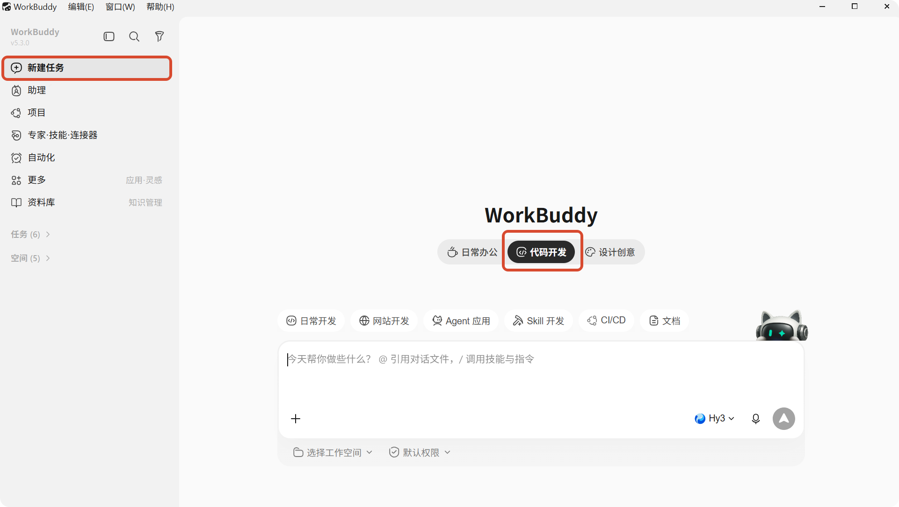
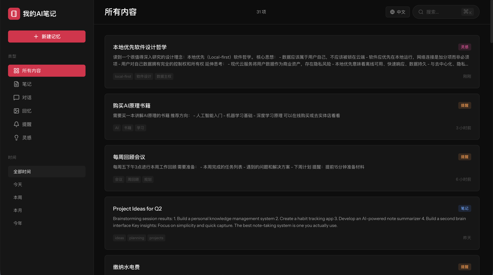

实践七：零代码制作本地应用
一、文档说明
本文介绍如何通过 WorkBuddy 以自然语言方式设计、生成、调试并持续升级本地应用，适用于无代码基础或希望快速验证想法的用户。
二、让 AI 帮你设计应用
1）操作说明
为了让 AI 更好地完成应用开发工作，建议在新建任务时，选择代码开发模式开启新的对话。

2）示例指令
请帮我设计一个本地可运行的知识管理小工具，支持新增、搜索、编辑和分类，界面简洁，适合个人日常记录使用，并直接生成可运行的代码。
3）预期结果
WorkBuddy 会理解需求，自动生成完整代码并尝试运行，最终效果如下：

三、让 AI 帮你解决报错
1）操作说明
项目运行过程中出现异常时，只需在对话中描述观察到的现象，WorkBuddy 会继续基于当前上下文进行排查。
2）示例指令
点击保存按钮后页面白屏，控制台提示
TypeError，请帮我定位原因并修复。
3）提升修复效率的建议
- 描述具体现象：例如按钮名称、报错位置、触发步骤。
- 支持多轮排查：首次修复未完全解决时，可继续补充最新现象。
- 善用截图：报错界面、控制台信息和日志截图都能帮助定位问题。
四、让 AI 帮你持续升级系统
WorkBuddy 不仅可以生成初版应用，还可以在后续使用中持续扩展系统能力。
1）常见升级场景
| 需求描述 | AI 可能执行的动作 |
|---|---|
| 希望支持模糊搜索，不依赖精确关键词 | 接入本地向量或语义检索能力 |
| 每天早上自动推送待处理任务 | 配置自动化任务并汇总待办 |
通过 QQ 或微信随时录入内容 | 对接消息平台并增加移动端输入通道 |
| 新增内容时自动关联已有记录 | 增加关联分析与知识整理能力 |
五、使用建议
- 先做最小可用版本：先完成核心功能，再逐步增加复杂能力。
- 问题描述尽量具体：越具体，
AI越容易快速修复。 - 把升级需求拆开提：一次只增加一类能力，更利于稳定迭代。